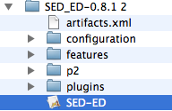
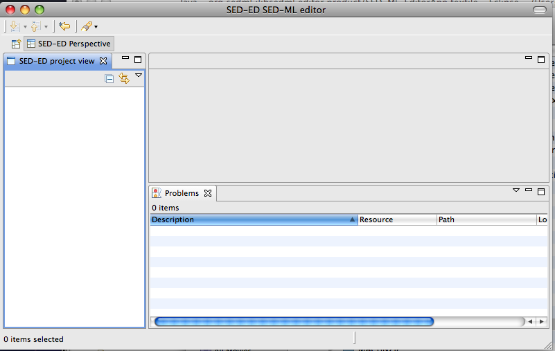

This help file gets you started with the SED-ML editor application, a demonstrator application for the SED-ML editor plugin for Eclipse and SBSI.
Download the application, unzip it, and double-click the launch icon in the unzipped folder. E.g.,

When the app launches you’ll be asked to choose a folder to be your workspace.
This should just be a regular folder on your file-system.

To start off with we’ll create a project. From the File->New->Other menu choose General->Project and give it a name, and click OK. You’ll see a new project folder created in the ‘SED-ED project view’ on the left hand panel.
You can now just drag and drop the ‘examples’ folder in your download in to the workspace.
To investigate and explore the examples and find out how to use the SED-ML editor, please look at the
SEDML_editor plugin help. You can open different sorts of editors on the files: a regular text editor, an XML editor, or
for the SED-ML files, the SED-ED editor. To choose an editor, select a file then right-click and choose the Open->Open With menu item from the context menu.
The Problems view shows anay SED-ML validation errors. Double clicking on a problem in this view will open a text editor with that problem highlighted.